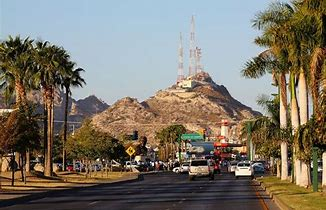
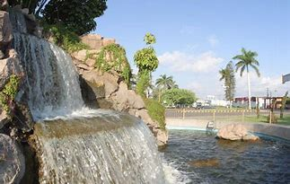
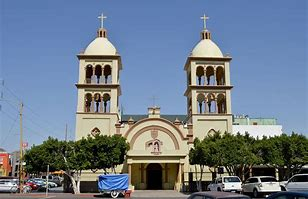
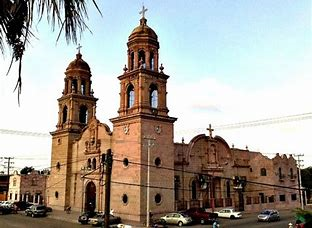
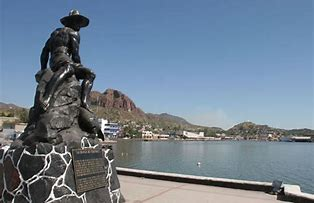
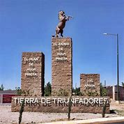
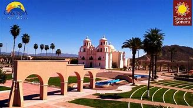
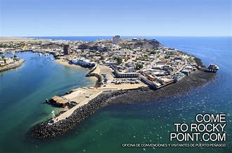
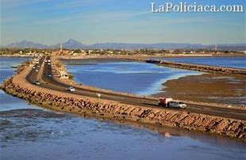

|
Ciudades mas pobladas |
|
|
Ciudades mas pobladas |
|
CIUDAD |
IMAGEN |
POBLACION |
|
|---|---|---|---|
| 1. | Hermosillo |
 | 884,273 |
| 2. | Obregon |
 |
298,625 |
| 3. | Nogales |
233,952 |
|
| 4. | San Luis Rio Colorado |
 |
192,739 |
| 5. | Navojoa |
 |
163,650 |
| 6. | Guaymas |
 |
158,046 |
| 7. | Agua Prieta |
 |
82,918 |
| 8. | Caborca |
 |
85,631 |
| 9. | Puerto Peñasco |
 |
62,177 |
| 10. | Empalme |
 |
56,177 |